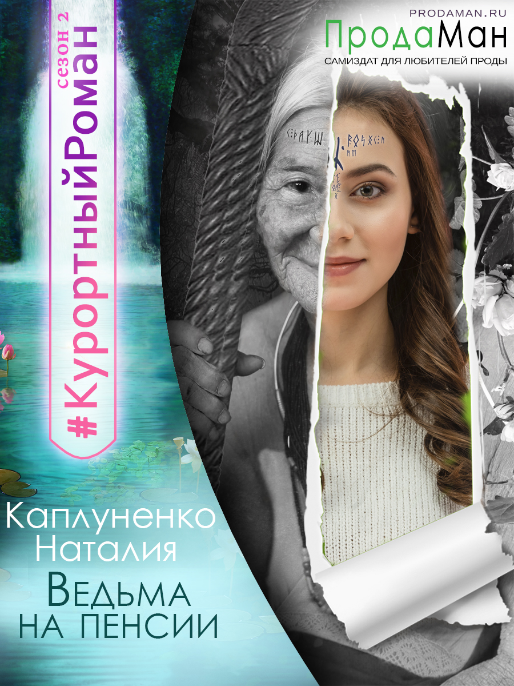

|  | Жила себе самая обычная бабушка и горя не знала, пока дети не решили отправить ее в отпуск в самый настоящий Лес. И понеслось: коты разговаривают, избы вдруг встают на куриные ножки, а огромная лягушка при знакомстве представляется царевной... И все бы ничего, но сердцу новоиспеченной ведьмы нет покоя: оно полюбило горячо и по-настоящему. Полюбило так, что и дышать больно. Вот только зачем молодому князю старуха? Многое придется ей пережить. Главное в погоне за молодостью, не забыть, ради чего все это затевалось, и вовремя осознать, что только настоящая любовь способна действительно на все. Год написания: 2019 Серия/цикл: нет Другое: участник литмоба "Курортный роман" |
| Всю жизнь Шати скрывала от окружающих, что она — чтец душ. Кому же понравится жить рядом с тем, кто в любой момент может заглянуть в твой разум и познать душу? Но после череды жестоких убийств, в их провинциальный город приезжает столичный дознаватель. Демон. Аристократ. Ему придется не раз спасать жизнь юной девушки, ей — узнать что такое безответная любовь. Захочет ли мужчина сохранить ее тайну? Сумеет ли Шати согреть его каменное сердце? А ведь виной всему женское любопытство... Год написания: 2019 Серия/цикл: нет Другое: - |
|
 |
Сила круга из двенадцати магов, мощное заклинание, толика удачи - и вот твоя половинка, родная душа перенесена из далекого мира Земля прямиком в твои объятия. Но что если сил на полноценный ритуал не хватило и девушка оказалась одна неизвестно где? И что если даже опытные следопыты лишь разводят руками и стыдливо отводят взгляд? Похоже, придется хрупкой деве, преодолевая трудности пути, огромных дружелюбных ящеров и хищниц-лиан, эльфов, домовых и прочую нечисть, идти к прекрасному принцу самой...
Но где наша не пропадала? Год написания: 2019 Серия/цикл: нет Другое: - |
| Какова жизнь лесной ведьмы? Заботы да хлопоты: ветер заговорить, зверье подлечить, стужу утихомирить, белым пушистым ковром землю укрыть, селянам местным помочь и о себе не забыть…
Не прошла и мимо чужой беды - исцелила раненого незнакомца. Лорда. Настоящего. Из высших. Не ждала благодарности, но и беды не ожидала. Кому есть дело до местечковых суеверий, когда в городах больших лишь магия в почете? Но вновь стучится в мою дверь высший, чтобы изловить и на службу себе поставить.
Ну что же, уважаемый лорд, в темном лесу, в дикой чаще, в моем доме. Найди меня. Поймай меня. Если сможешь… Год написания: 2019 Серия/цикл: нет Другое: золотой призер конкурса "Продамастер 2018" |
|
| Волею судьбы душа нашего соотечественника попадает в магический мир, где боги изготовили для нее особый сосуд: сильное и здоровое тело. Чего еще желать молодому парню, если на Земле он умер от неизлечимого заболевания? Вот только тело это не человеческое: вместо ног хвост, вместо кожи чешуя, две пары рук да еще и крылья. Придется ко всему этому привыкать, а еще обживаться на новом месте, находить друзей и подопечных, обзаводиться врагами... ну и, конечно, предотвращать апокалипсис! Год написания: 2018 Серия/цикл: первая часть серии "В теле демона" Другое: гг - мужчина |